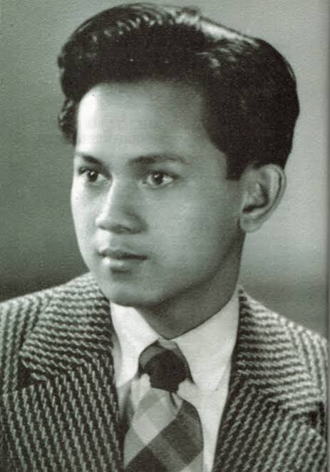
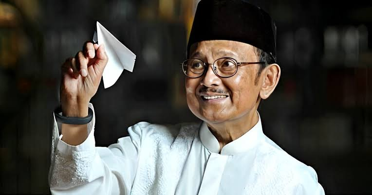
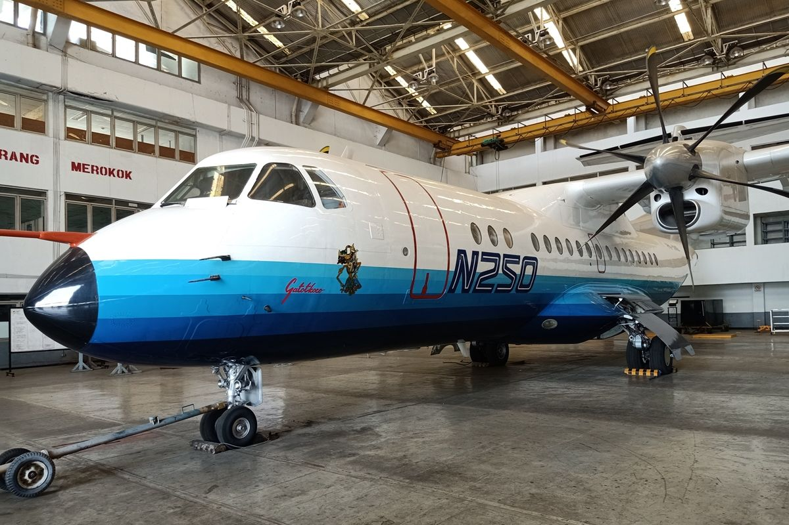

B.J. Habibie
Bapak Teknologi Indonesia & Presiden RI Ke-3
Profil Singkat
Biodata Utama
- Nama Lengkap: Prof. Dr. Ing. H. Bacharuddin Jusuf Habibie
- Lahir: Parepare, Sulawesi Selatan, 25 Juni 1936
- Wafat: Jakarta, 11 September 2019 (Usia 83)
- Bidang Keahlian: Teknik Penerbangan & Aerodinamika
Sekilas Tentang Habibie
B.J. Habibie adalah sosok teknokrat jenius yang mengharumkan nama Indonesia di panggung dunia. Dikenal dengan julukan "Mr. Crack" karena menemukan teori perambatan retakan pada struktur pesawat, beliau berhasil membuktikan bahwa anak bangsa mampu memimpin industri teknologi tingkat tinggi melalui pembuatan pesawat terbang N-250 Gatotkaca.
Pendidikan & Perjalanan Karir
Institut Teknologi Bandung (ITB)
Menempuh pendidikan Teknik Mesin sebelum melanjutkan studi ke Jerman.
RWTH Aachen, Jerman
Meraih gelar Diplom-Ingenieur (1960) dan Doctor-Ingenieur dengan predikat Summa Cum Laude (1965).
Messerschmitt-Bölkow-Blohm (MBB) Jerman
Menjabat sebagai Vice President & Director of Technology di perusahaan penerbangan terkemuka Jerman.
Menteri Negara Ristek / Kepala BPPT / Direktur IPTN
Memimpin riset dan industri strategis Indonesia, serta memproduksi pesawat buatan dalam negeri N-250.
Presiden Republik Indonesia Ke-3
Memimpin Indonesia pada era transisi reformasi dan meletakkan dasar kebebasan pers serta kebebasan berdemokrasi.
Keahlian & Hobi
Keahlian Utama
Hobi & Kegemaran
- 📚 Membaca Buku: Menghabiskan waktu berjam-jam membaca buku sains, filsafat, dan biografi.
- ✍️ Menulis Catatan & Buku: Menulis karya ilmiah dan buku otobiografi "Habibie & Ainun".
- 🏍️ Koleksi Motor Klasik: Menggemari dunia otomotif, termasuk motor gede bermesin besar.
- ✈️ Aeromodelling: Merancang miniatur model pesawat terbang sejak usia muda.
Galeri Foto Tertata



Kutipan Inspiratif
"Harus konsisten dalam menekuni bidang disiplin ilmu yang Anda pelajari. Jadilah yang terbaik di bidang Anda!"
— Prof. B.J. Habibie
"Tak ada gunanya IQ Anda tinggi namun malas, tidak memiliki disiplin. Yang penting adalah Anda sehat dan mau berkorban untuk masa depan yang lebih baik."
— Prof. B.J. Habibie
"Keberhasilan bukan milik mereka yang pintar, melainkan milik mereka yang senantiasa berusaha dan tidak pernah menyerah."
— Prof. B.J. Habibie